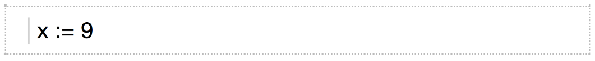
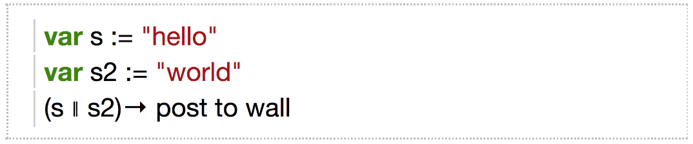
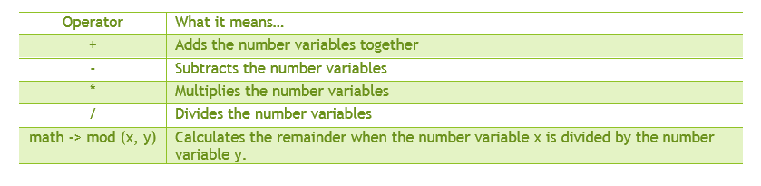
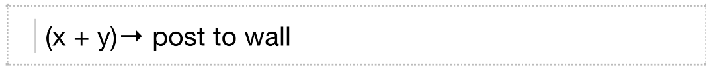
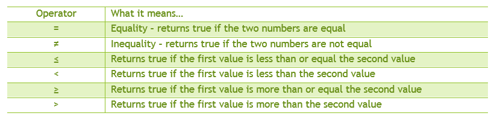
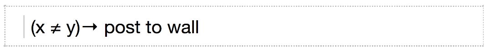
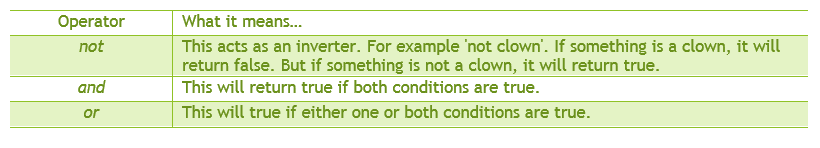
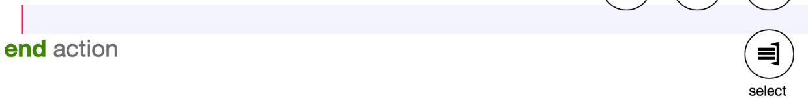
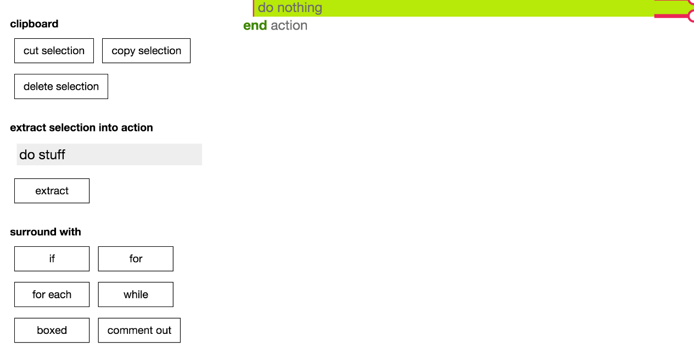

Operators
This tutorial will teach you about operators. Operators are symbols that are used to represent an actions used in programming.
Interactive Lesson: Click Here
Assignment Operator
Assignment operators are used to assign different types of variables to something. For example, you can assign a number x to equal 1. The symbol we use in TouchDevelop to assign a variable to a value is :=.
Here is an example of what the code would look like on TouchDevelop:
We can use the same operator to update the value of a variable. For example, we can re-assign the variable x to equal 9.
Note: When we update the value of a variable we do not need to declare the variable again using the 'var' feature.
Concatenation Operator
Concatenation is when you join two things together. In TouchDevelop, we use || to symbolize the concatenation operator. This takes two values of any type, converts them into string variables and then joins them together.
We can try this out. Firstly, create two different string variables and then use the operator to join the two strings together. Here is an example that concatenates the two strings “hello” and “world” and posts it to the wall.
Arithmetic Operators
Arithmetic operators are used to do the simple mathematics operations that we learn. There are 5 main ones that we use in TouchDevelop. They are shown in the table below.
Arithmetic operators operate on number variables and they also return number variables.
If we create two number variables x and y in the program, we can try these operators. Assign the two variables to any values, for example 9 and 3.
Then, we can add the two numbers together and post it to the wall like this
Note: Remember the brackets when using these operators! Otherwise, the computer will get confused, and there will be an error when you run the code.
As with the '+' operator, the '-' operator can be used in the same format. However, we can assign the result of using an arithmetic operator to a new variable. Look at this example:
Here, we have assigned a new variable, z, to the result of (x-y). We can treat this new variable as any other it can be used later on in the code.
The rest of the arithmetic operators are also used in the same way and format as the '+' and '-' operators. You can practice using these arithmetic operators if you create a new blank script on TouchDevelop.
Additionally, there are a lot of other mathematical operators that can be used. You can find these when you click on the 'math' button on the TouchDevelop software.
Relational Operators
A relational operator is used to compare two different number variables and then returns a boolean value (true or false).
There are 6 different relational operators; they are shown in the table below.
The way that these operators are used is very similar to the arithmetic operators. Here is an example of using the '≠' operator.
In the example above, we are comparing the two number variables x and y. In this case, if they are equal, then the program will return 'false', but if they are not equal, the program will return 'true'.
All the relational operators are used in the same way as the '=/' operator, so you can also practice using them in by creating your own blank script.
Boolean Operators
Boolean operators operate on booleans and also return a boolean (true or false). There are 3 boolean operators used with TouchDevelop; they are shown in the table below.
These operators are commonly used in if statements, so you will learn more about how to use these in the 'if' tutorial.
Commenting
Comments are lines of code that contains explanation or notes left by the coder. If a line of code is 'commented out' it will not be executed when the program is run.
Comments can be useful when someone who did not write the code is trying to understand what the program does.
To comment out some code in TouchDevelop, you can follow these steps:
- Click on the line of code that you want to comment out.
-
A bubble that says 'select' will appear on the right hand side of the line of code. Click this.
new side tab will appear and at the bottom, you will find a button that says 'comment out'. If you click this, the line of code that you have selected will be commented out with a statement that says 'if false then'.
 - To uncomment a statement, there will be a button that says 'uncomment out'